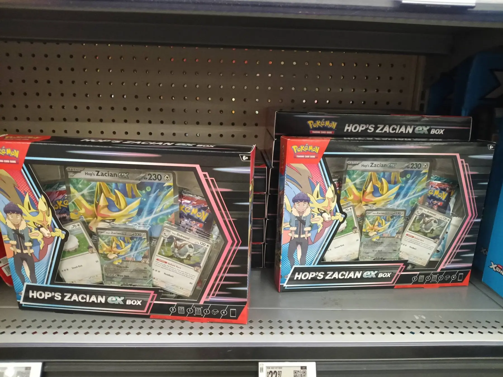
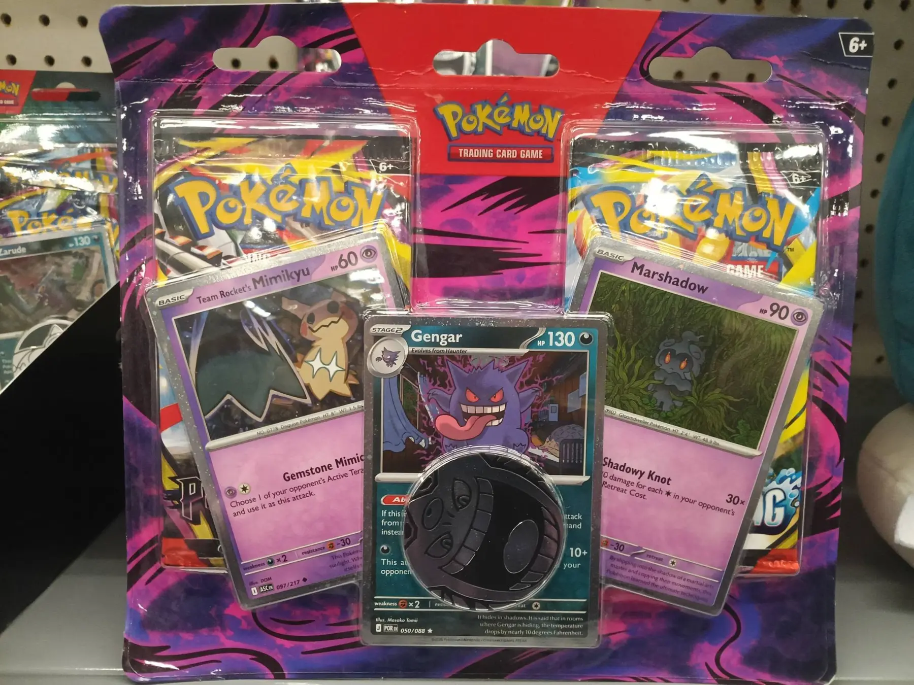
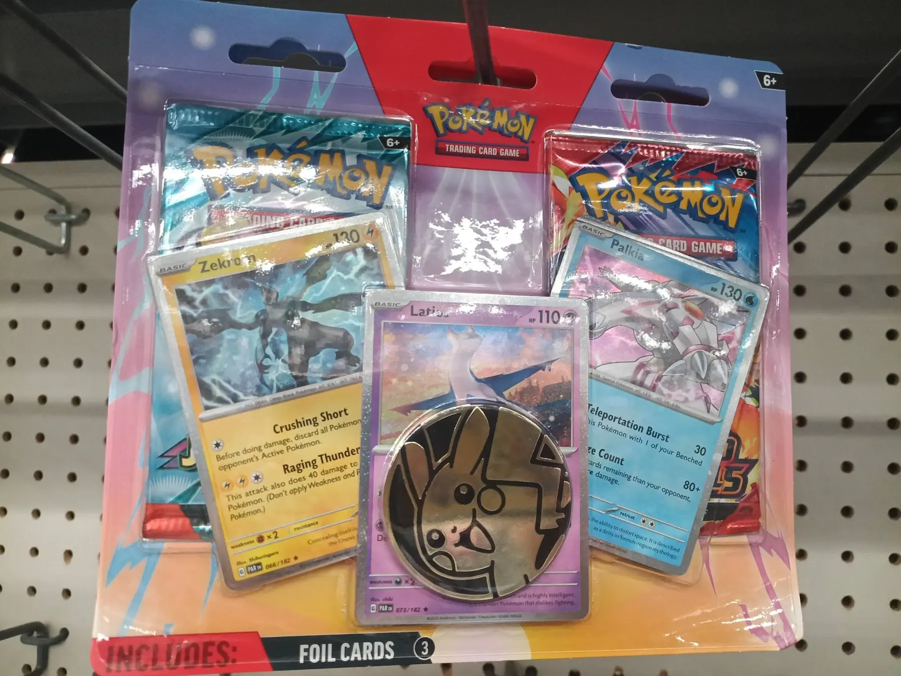

Check those Walmart, Target and Meijer stores! Walmart in Franklin already stocked this morning and others around the city are stocking right now!
Hop's Zacian ex boxes, Pokéball tins (L25), Pitch Black 3 pack and 2 pack blisters (the 2 pack with 1 PB 1 CR and the Gengar, Mimikyu and Marshadow promos) and Destined Rivals/Journey Together 2 pack blisters - are all available right now here at Franklin Walmart.



Those pokeballs have a chance to have Phantasmal Flames in them - but most of them are full of Twilight Masquerade - which is just as good in my opinion - since you can't find it anywhere else. They can also have Perfect Order, Journey and Surging Sparks - but the one's I've seen lately have had Twilight in them.
The Hop's boxes have 2 packs of Journey Together and 2 Packs of Destined Rivals - so that's probably the best deal here outside the Poke Ball.
Get out there and check your stores, Trainers! If you can beat them to the restock, you might actually score something good!
Happy Hunting!
← Back to PokéDaé News